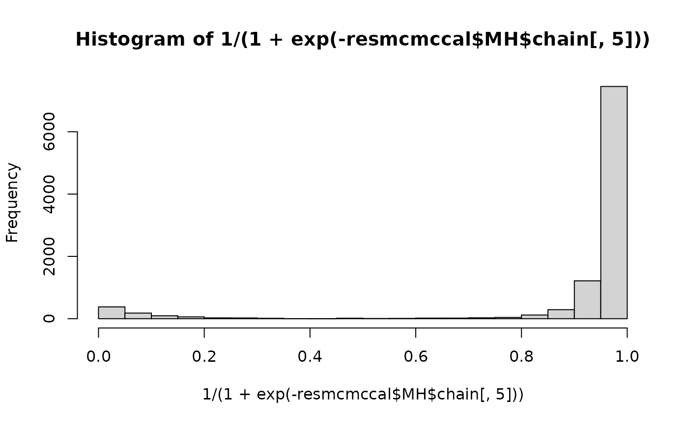

ExampleScenario2
ExampleScenario2.Rmd
library(PIPScreening)Scenario setting
True physical model is \[\zeta_i(x_1,x_2)=x_1+x_2,.\]
The field data are for \(i=1,\ldots,N\) : \[y_i=\zeta(\mathbf{x_i})+\epsilon_i\,.\]
where \(\epsilon_i\overset{iid}{\sim}\mathcal{N}(0,\sigma^2_\epsilon)\).
Our computer model / simulator is \[f(\mathbf{x},{\theta})= \theta x_1+(1-\theta)x_2\,.\] The parameter \({\theta}\) is a model parameter, it may be fixed or be to calibrate. This parameter tunes which of the input variables \(x_1\) or \(x_2\) is taken into account with the constraint that they cannot be both active.
Data simulation
Field data:
N<-50
theta<-.5 # choice of the theta (here same size as x)
sd<-0.05
scalefactor = 10
# x1 <- seq(0,1,length.out=N)
# x2 <- seq(0,1,length.out=N)
x1 <- runif(N,0,1)
x2 = runif(N,0,1)
simGal <- function(x){(x[,1]+x[,2])*scalefactor}
x <- cbind(x1,x2)
mu <- simGal(x) # physical system
y <- mu + rnorm(N,0,sd) # field exp by adding noisePreparing the data for running the MCMC run:
simulator = function(x,theta){(c(theta)*x[,1]+c(1-theta)*x[,2])*scalefactor}# computer model (si on fait *2 en plus c'est identifiable et pour theta=.5 c'est le vrai modele)
mod <- simulator(x, .5) # output of computer model
xnorm <- (x - matrix(apply(x,2,min),nrow=nrow(x),ncol=ncol(x),byrow=T))/matrix(apply(x,2,max)-apply(x,2,min),nrow=nrow(x),ncol=ncol(x),byrow=T) # normalization
Yexp <- y; Xexpnorm <- xnorm; Xexp <- x; Rexp <- (y-mod) Posterior sampling with or without calibration
Without calibration (\(\boldsymbol{\theta}\) being fixed to its true value)
calibration1 <- list(computermodel=simulator,Yexp=Yexp,Xexp=Xexp,FALSE)
tdistFULL <- tensordist(xnorm)
pgamma <- 2
parwalk = c(rep(.1,pgamma),.1,.1)*5
parwalkinit <- parwalk
init <- c(rep(0,pgamma),.004,.2)
parprior <- rbind(matrix(1,nrow=pgamma,ncol=2),c(4,.02),c(3,1))
nMWG <- 5000
nMet <- 10000
resmcmc <- (MCMC(nMWG,nMet,parwalkinit,init,Rexp,tdistFULL,1.9,parprior,TRUE,calibration1))With calibration, we just changed some options to run this version such as the calibration2 list which indicates that calibration should be done, the init2 vector which gives the initial value for all the parameters (now it includes the \(\theta\)s) and the parwalkinit2 which gives the parameter for the random walk.
ptheta <- 1
calibration2 <- list(computermodel=simulator,Yexp=Yexp,Xexp=Xexp,TRUE)
parwalkinit2 <- c(parwalk,rep(.5,ptheta))
init2 <- c(rep(0,pgamma),.004,.2,rep(.5,ptheta))
resmcmccal <- MCMC(nMWG,nMet,parwalkinit2,init2,Rexp,tdistFULL,1.9,parprior,TRUE,calibration2)The sampling is done with a Metropolis within Gibbs algorithm and then with a Metropolis algorithm. From the MwG algorithm, a covariance matrix is derived for the random walk in the upcoming Metropolis algorithm. Some adaptations are performed to set the exploration step. Note the number of iterations are really low in this vignette to limit its compilation time.
Computation of probabilites of activeness
First computed from the posterior sampling without calibration and then computed from the posterior sampling which deals with calibration. We obtain then two vectors of probabilities which give for each variable the probability that a variable is active in the discrepancy. Here we expect that the fist variable (because of the power 2 in the physical system) and the second variable (because of the mismatch between the physical system and the computer model) to be active.
thinning = seq(1,nMet,10)
computeProbActive(resmcmc$MH$chain[thinning,1:pgamma])
#> [1] 0.05175037 0.05903950
computeProbActive(resmcmccal$MH$chain[thinning,1:pgamma])
#> [1] 0.04056581 0.60455040posterior sans calibration

posterior en calibration

plot(resmcmccal$MH$chain[,5],resmcmccal$MH$vlogpost)
two-step discrepancy screening
We estimate the parameter \(\theta\) by the median of the posterior distribution
print(thetamed)
#> [1] 0.9808601
modthetamed <- simulator(x, thetamed)
Rexp <- (y-modthetamed)
resmcmcthetamed <- (MCMC(nMWG,nMet,parwalkinit,init,Rexp,tdistFULL,1.9,parprior,TRUE,calibration1))We estimate the parameter \(\theta\) by the mean of the posterior distribution
print(thetamean)
#> [1] 0.8980382
modthetamean <- simulator(x, thetamean)
Rexp <- (y-modthetamean)
resmcmcthetamean <- (MCMC(nMWG,nMet,parwalkinit,init,Rexp,tdistFULL,1.9,parprior,TRUE,calibration1))
resmcmcthetamean$MH$AccepRate
#> [1] 0.4482
plot(1/(1+exp(-resmcmcthetamean$MH$chain[,1])),type="l")For both cases, we compte the probabilities of activness:
computeProbActive(resmcmcthetamed$MH$chain[thinning,1:pgamma])
#> [1] 0.01079396 0.71888131
computeProbActive(resmcmcthetamean$MH$chain[thinning,1:pgamma])
#> [1] 0.01372718 0.47972961